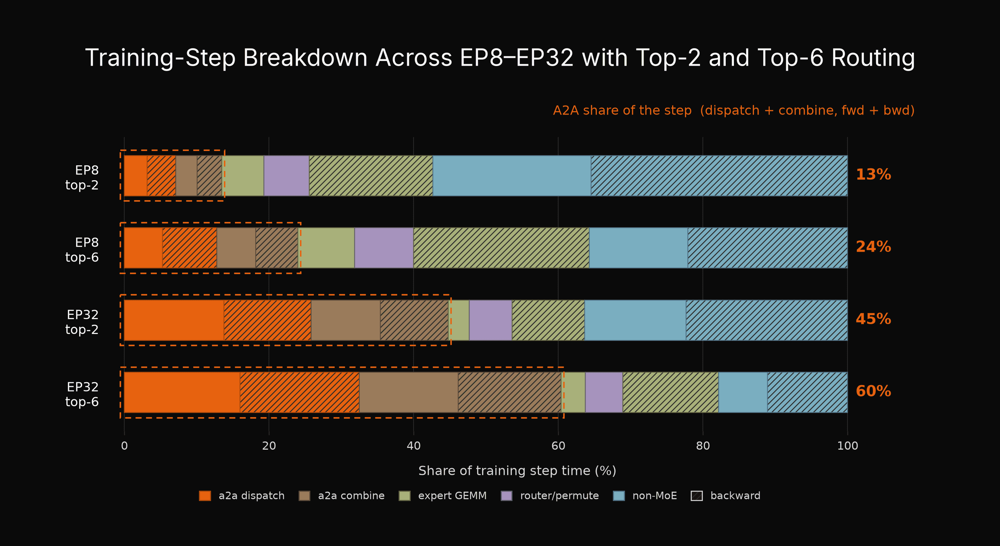
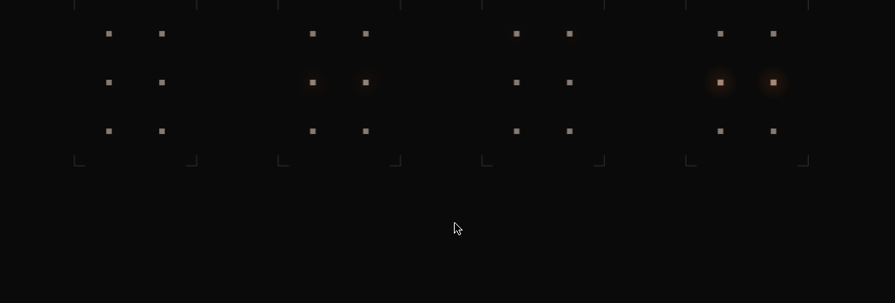
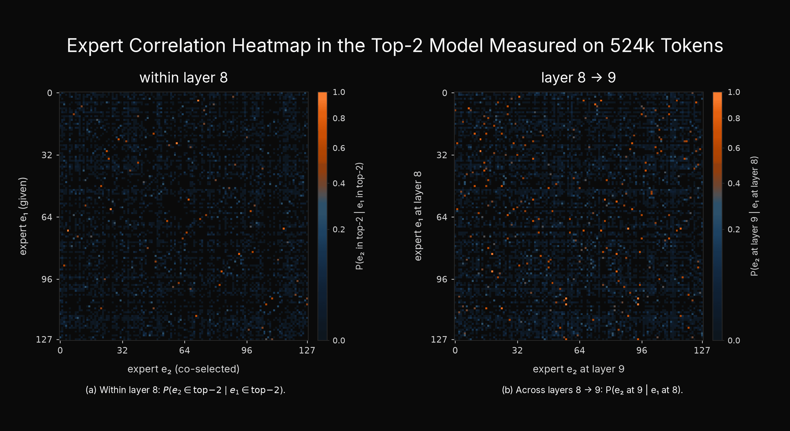
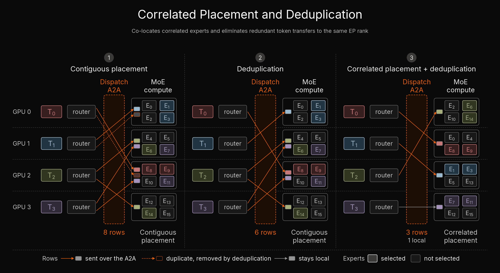
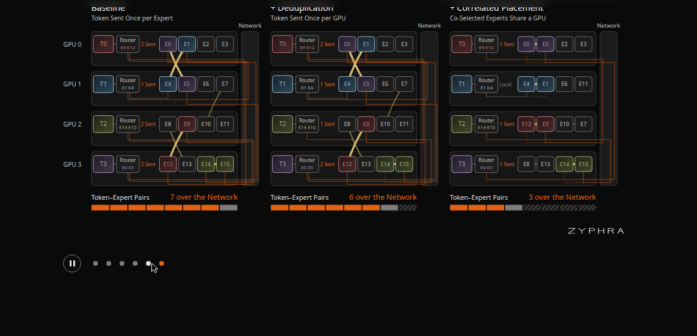
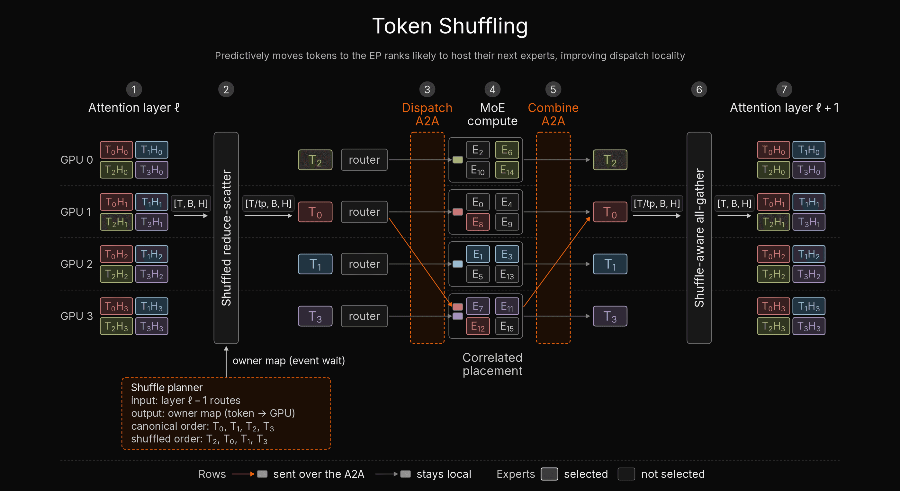
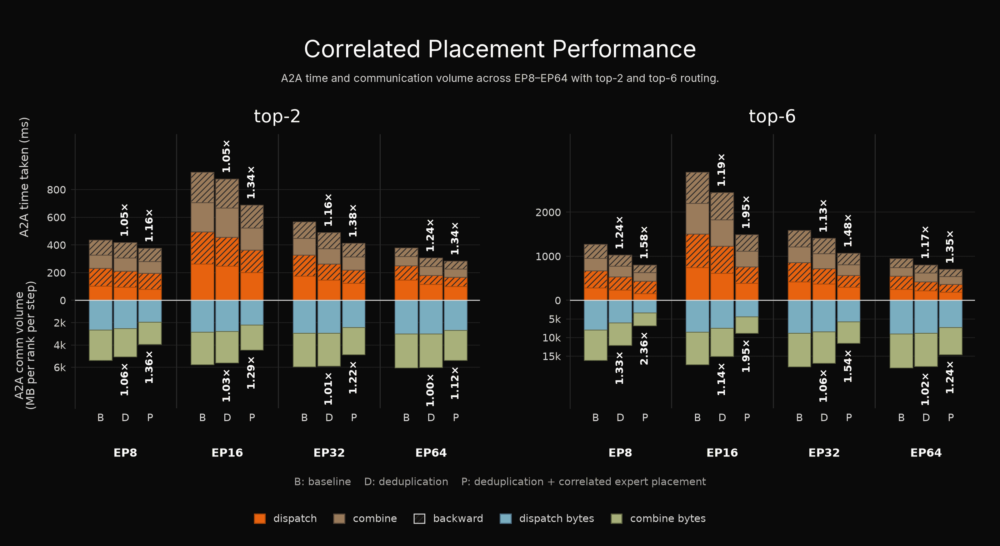
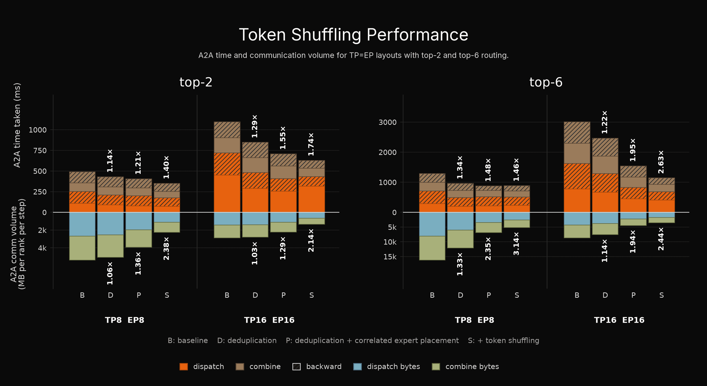

MoE模型把算力问题解决了，却把通信问题留给了网络。当专家并行扩展到32路，all-to-all通信能吃掉60% 的训练时间。Zyphra的新工作指出，路由本身藏着可利用的结构。
Mixture-of-Experts模型通过每次只激活一小部分专家来扩展模型容量，算力成本不随专家数增长。但在大规模下，MoE引入了另一个瓶颈：all-to-all通信。在专家并行中，专家分布在多个GPU上，token选中远程GPU上的专家时就必须跨网络传输。
随着专家并行规模扩大，尤其是每个token路由到更多专家时，问题急剧恶化。在8个MI300x节点的集群上，从EP8扩展到EP32，all-to-all在训练步骤中的时间占比从13% 飙升到60%。想把更大的MoE模型训得高效，光减少计算量不够，还得解决通信。

传统专家放置基本无视路由器的实际行为，专家通常按ID顺序连续放置。但训练开始后会发现这个假设大错特错：专家会特化，路由呈现出强结构。

在top-k路由中，某些专家被同一个token一起选中的频率远高于随机预期。在一个top-2模型里，45% 的token只选中了全部可能专家对中0.8% 的组合。以第8层的top-2模型为例，8128个可能专家对中仅64个就占了45% 的token。
跨层同样存在相关性：第8层访问某专家的token，在第9层的专家选择远非均匀分布。同一模型中，第8层的128个专家里有112个会把至少一半token送往第9层的少数几个专家。这两种相关性分别对应文中的两项核心技术。

第一项技术是相关专家放置。对每个MoE层，统计每对专家被相同token选中的频率，形成相关图，然后把高频共选的专家放到同一个GPU上。如果两个专家经常被同一个token选中，把它们放在同一GPU，token只需去一个地方而非两个。
这与去重分发器结合效果更佳。通常token选中同一远程GPU上的三个专家时，分发器会发三份拷贝；去重后只发一份，外加元数据指明本地哪些专家处理。相关放置刻意制造更多去重机会。在EP8下，仅去重就能为top-2路由去掉6% 的传输行，而相关放置把这个数字进一步放大。


专家放置只解决了一半的局部性问题。大模型和长上下文训练通常还要叠加张量并行，因为光靠专家并行装不下模型。第二项技术token shuffling利用跨层路由相关性来应对。
token在之前MoE层选中的专家，对下一层会选谁有很强的预测力。做法是在attention层的reduce-scatter集合通信中顺手完成重排：既然这个集合通信本来就要搬运token，就按预测把token洗到下一层专家所在的GPU，不增加额外网络流量。下一次MoE的dispatch就有更高概率命中本地。
这改变了计算发生的位置，不改变计算本身：路由器选的专家完全一样，只是token被提前放到了未来计算likely发生的地方。

基于路由统计的系统优化，如果需要持续profiling才有说服力会大打折扣。好在这些相关性极易估计且随时间稳定。仅用1024个token就能恢复出捕获大部分收益的专家放置，4096个token时基本收敛。收集优化所需信息的开销相对训练微不足道。
相关性还出现得很早：模型训练200万步，step 199估计的相关表就能拿到约一半的最终放置收益，到step 1000时与最终基本一致。这意味着不需要频繁搬动专家或持续重排token，一次性优化长期有效。
减少字节数只有转化为墙钟时间才有意义。两项技术都在Megatron框架内实现。仅相关专家放置加去重，top-2路由下all-to-all时间降低1.16至1.38倍；叠加token shuffling后，top-2最高1.74倍，top-6最高2.63倍。
这些不是模型质量或稀疏度的改变：相同的token访问相同的专家，做相同的专家计算。纯粹是通信优化。


MoE架构通常用计算稀疏性来论证：路由器只选一小部分专家，所以模型容量可以远大于激活算力。但在现代分布式系统里，FLOP只是成本的一部分。专家散布在众多GPU上时，路由决策同时定义了一张通信图，而传统专家并行把这张图当成了随机图。
这项工作表明路由图里有大量可利用的结构：专家特化成相关组，token在这些组之间沿可预测的轨迹穿行。两项技术都不需要专家复制，不改变负载均衡，可以与现有MoE设计正交叠加。随着MoE向更多专家、更高top-k、更大专家并行组扩展，从路由相关性里榨取局部性会越来越重要。
参考：https://www.zyphra.com/our-work/expert-coupling-in-moe-pretraining